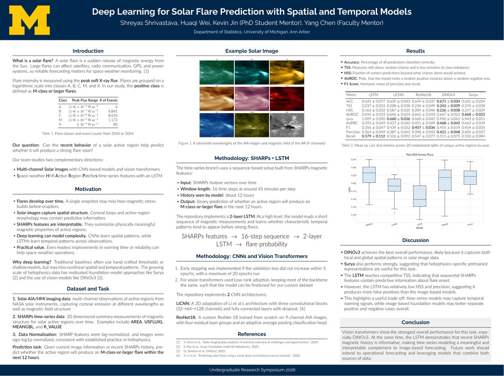
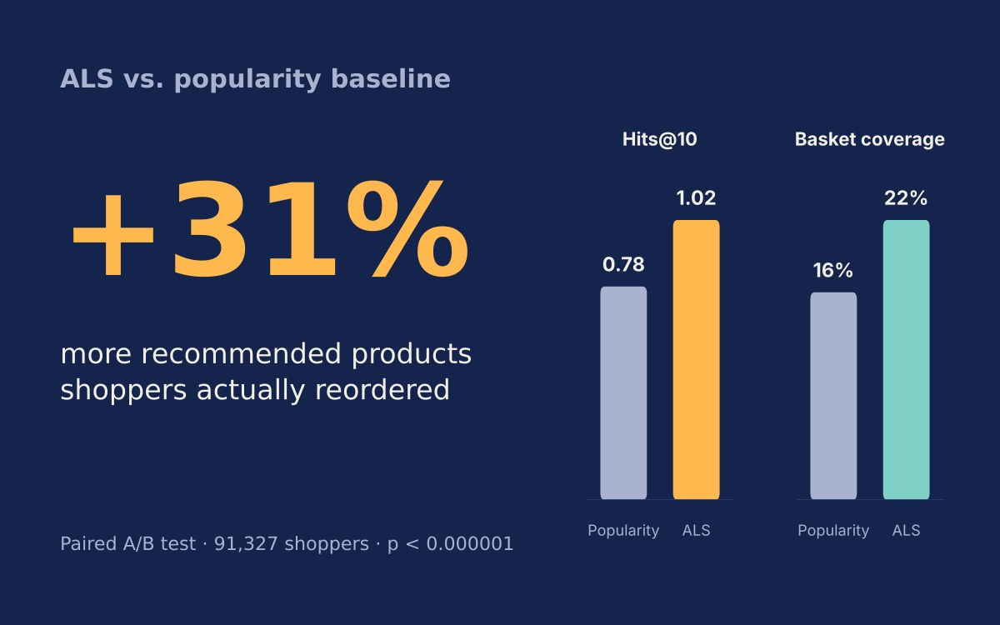
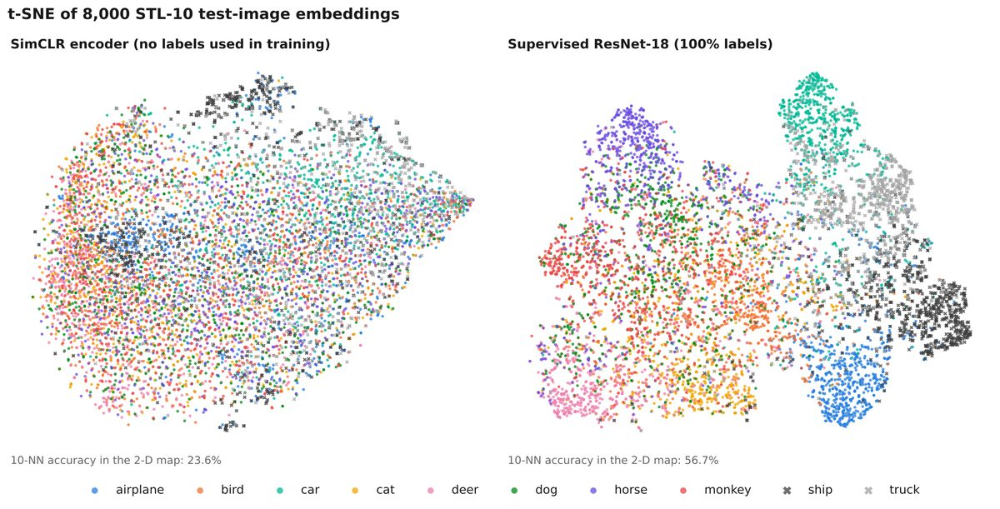

Viewtopsy – Multimodal Livestream Analysis
Finds the moments a Twitch or YouTube chat reacted to, classifies the reaction, explains the likely cause from video frames, and suggests clip-ready ranges.
View on GitHubEverything I’ve built, from research to weekend experiments. Each one links to its code.
Finds the moments a Twitch or YouTube chat reacted to, classifies the reaction, explains the likely cause from video frames, and suggests clip-ready ranges.
View on GitHub
Undergraduate research (U-M Statistics) forecasting M-class-or-larger flares from multi-channel solar images (ResNet-18, DINOv3, Surya) and magnetic-field time series (LSTM).
View poster
Popularity, ALS and SASRec recommenders compared in paired A/B tests on 200k grocery shoppers. ALS lifted hits by 31% over the popularity baseline.
View on GitHub
SimCLR built from scratch with a hard-negative-weighted contrastive loss, pretrained on 100k unlabeled STL-10 images and benchmarked against supervised training at 1–100% of labels.
View on GitHubDo longer project essays get approved more often? A simulated A/B test of 800–1,200 character minimums on 109k DonorsChoose proposals showed that longer essays do win, but a hard minimum would drop overall approval from 84.9% to as low as 64.7%.
Predicts how well a video game will be rated, using data pulled from the IGDB API, engineered and target-encoded features, and Random Forest and XGBoost regressors.
Explore music by mood, energy, danceability and tempo instead of genre. Tune a song’s attributes, get recommendations, and build a spider chart of your taste. I built the artist profiles page.
Chat with your PDFs. Documents are split, embedded into a FAISS vector store and answered through a LangChain conversational retrieval chain in a Streamlit app.